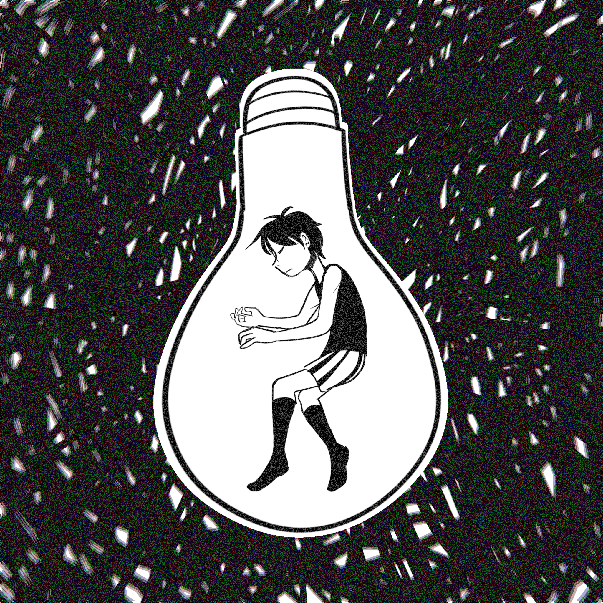

In Anarchy, State, and Utopia (1974), Nozick introduces this thought experiment to counter hedonism. Hedonism is the philosophical view that prioritizes pleasure and avoids pain, claiming that humans are motivated to seek pleasure over pain. In his thought experiment, he poses the question: would you plug into this machine for the rest of your life, knowing you would experience the maximum amount of pleasure your life could bring you? This pleasure would be the same as you would feel in the "real world," as if you had just accomplished something you worked hard for. You would experience that great sense of pleasure within you. Additionally, upon entering the machine, you will have no recollection of doing so. None of your pleasurable experiences will be ruined by the memory that you are now plugged into the machine.1 However, Nozick argues that many would not opt into the experience machine. He claims that most would feel as though it was "fake", and their lives would be void of other factors.2 For example, let's say John's goal is to run a marathon. In the machine, he can feel the triumph without any of the effort, pain, or perseverance it would take in real life. The physical and mental challenges are not always pleasurable. I believe that many would say that the process matters. The struggle itself gives meaning to the success. It seems as though most would prefer the ability to perform the actions, rather than simply experiencing it. Many also prefer personal development, free will, and relationships and connections with others rather than simply experiencing them.
This reveals something profound: even though we say we enjoy pleasure, we also seem deeply committed to reality. From Nozick's argument, it seems like he believes people find something valuable in living within what is real. But are we really, truly committed to reality?
What would happen if the question was flipped? If you were not living within a reality, would you make an effort to seek what is real?
I do not believe people are as committed to reality as they say they are. However, first, let's differentiate perception and reality. While perception is how one understands or interprets things or the world, reality is the way things exist in this world. For example, Sam and Nora are a married couple. Sam believes they are in a happy marriage, both true to their love for one another. Nora, however, is having an affair. Sam's perception is that he and Nora are in a truthful marriage. The reality is that they are not in a truthful marriage. Many may believe and claim that they are committed to the reality of the world. They prefer to live in the real world rather than be blindsided. In Sam's case, most would want to know that their spouse is cheating on them. Yet, I also believe that when it comes to most situations, faced with real decisions, most do not follow this commitment to reality. Let's take veganism and animal cruelty, for example. Many agree that animal cruelty is immoral and that we should not mistreat and abuse animals. They know animals suffer in factory farms or are exploited in the fashion industry. Yet only about 1-2% of the global population is vegan.3 If so many people are aware of this reality, why don't they act on it? Because facing the truth is inconvenient. Changing diets, habits, or wardrobes requires effort, discomfort, and sometimes social alienation. People's values seem to be inconsistent, constantly dependent on what is most comfortable to them.
In the case of the experience machine, Nozick suggests that most would not opt into the machine, claiming that there are other factors, rather than simply pleasure, that people value. However, what if your position was reversed? Imagine you are told your current life is the one being experienced in an experience machine, like the one described in Nozick's thought experiment. You do not know what lies beyond the world you are currently experiencing. You also have no information on what is in the real world either. Additionally, if you choose to stay, will forget this encounter ever existed. Your current life would not be haunted by the fact that you are currently living in an experience machine that has been and will continue to stimulate all your experiences. Would you choose to leave? Most people probably wouldn't. If they are happy in their current lives, have meaningful relationships, stable routines, and fulfilling goals, they may feel no need to risk it all for an unknown "reality." Once again, people tend to favor comfort over truth, just as they do when ignoring animal cruelty or environmental degradation.
That leaves the question of how committed we are to this notion of real. Can we truly say that we are uncommitted to it if we do not choose to leave this experience machine that has become our reality? Firstly, I believe people's commitment to this notion of reality is dependent on convenience to them. Many choose to ignore that many food or fashion brands practice animal cruelty, simply because it is more convenient for them to enjoy those pleasures than face what is going on. People may ignore the ethical problems behind their favorite brands simply because everyone else does too. It feels socially acceptable. However, in the example with the married couple, Sam might ignore Nora's infidelity if no one else knows about it. But if the affair becomes public and threatens his reputation, he might be more motivated to act. Perhaps the social cost, rather than a commitment to truth, is what pushes him to confront reality.
In the case of the experience machine, the idea that we would forget that we are told we would be living in an experience machine is the same. Our lives would not be affected. We would have no recollection that our lives are fake. We enjoy and are comfortable with our established lives in the experience machine, so why would we leave? Only those with a deep commitment to truth, dissatisfaction with their current life, or a strong moral compass might choose to leave. But once again, the decision depends on how it impacts them personally.
This preference for convenience shows up in our daily routines too. We're drawn to solutions that promise results with minimal effort: fad diets that require no exercise, AI tools like ChatGPT that deliver answers instantly, and productivity hacks that streamline work. This isn't inherently bad. It reflects a desire for efficiency. But it also reveals how rarely we choose the difficult path, even if it's more honest or real.
So, are we committed to reality? Only conditionally. Our desire for the truth is often outweighed by the desire for ease, comfort, and familiarity. Whether it's ignoring ethical dilemmas or choosing simulated pleasures over real struggle, we often act in ways that favor convenience over authenticity. Maybe this also leave us to reconsider Nozick's thought experiment. The experiment was from 1967, but we now live in an age in which easy and quick solutions are more sought after. Perhaps many may prefer to just live in an experience machine, where pleasure is accessible without struggle.
In the end, our answer to Nozick's question, "Would you plug in?", may say a lot about hedonism. But flip the question. Would you unplug? This says more about us. Perhaps the real question is: When faced with the choice between truth and comfort, which do you choose?
1 Buscicchi, Lorenzo. n.d. "The Experience Machine | Internet Encyclopedia of Philosophy." Internet Encyclopedia of Philosophy. https://iep.utm.edu/experience-machine/.
2 Nozick, Robert. 1974. Anarchy, State, and Utopia. New York: Basic Books.
3 Osborn, Jen Flatt. 2023. "Unveiling the Numbers: How Many Vegans Are in the World?" World Animal Foundation. March 30, 2023. https://worldanimalfoundation.org/advocate/how-many-vegans-are-in-the-world/.